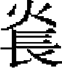

仁宗上
仁宗聖文欽孝皇帝，諱愛育黎拔力八達，順宗第三子，武宗同母弟也。以至元二十二年三月丙子生。
大德九年冬十月，成宗不豫，皇后伯牙吾氏出帝與興聖皇太后居懷州。十年冬十二月，帝至懷州。所過屏供張，戒飭扈從之士毋擾累郡縣，民皆感悦。
十一年春正月癸酉，成宗崩。戊子，帝與皇太后赴喪。二月辛亥，至大都，入臨出居舊邸。時安西王阿難答、諸王明里帖木兒已先至。中書左丞相阿忽台、平章政事八都馬辛、前中書平章政事伯顔、中政院使怯烈道興等，潛謀推皇后稱制，以阿難答輔之。三月乙卯朔，阿忽台等請皇后以丁巳日垂簾，自右丞相哈剌合孫以下皆列牘署名。丙辰，帝率衛士入宫，召阿忽台等，責以亂祖宗舊制，執之。戊辰，殺左丞相阿忽台、平章政事八都馬辛、中政院使怯烈道興等。寧王闊闊出、楚王牙忽都進曰：「今内難已平，太子世祖之孫，宜早正大位。」帝曰：「王何爲出此言？奸臣搆亂，故誅之，吾豈欲覬覦神器耶？懷寧王吾兄，宜入承大統。」乃遣使迎武宗於北邊，帝以太子監國。武宗遲回不至，夏五月乙丑，帝奉皇太后幸上都，率左右部諸王勸進。武宗即位，六月癸巳，立帝爲皇太子，受金寶。
帝遣使求經籍，有進《大學衍義》者，命詹事丞王約等節而譯之。帝曰：「治天下，此一書足矣。」命與《圖像孝經》、《列女傳》並刊布天下。十一月戊寅，受玉册，領中書省、樞密院。
至大二年八月，立尚書省，詔帝兼尚書令。詹事院啟金州獻瑟瑟洞，請采之。帝曰：「吾以賢爲寶，瑟瑟何用？若此者，後勿復言。」淮東宣慰使撒都獻玉觀音、七寶帽頂、寶帶、寶鞍，俱卻之。
四年春正月庚辰，武宗崩。壬午，罷尚書省。命中書右丞相塔思不花、知樞密院事鐵木兒不花等參鞫尚書右丞相脱虎脱、左丞相三寶奴、平章政事樂實，右丞保八、左丞忙哥帖木兒、參知政事王羆罪狀。丙戌，脱虎脱、三寶奴、樂實、保八、王羆俱伏誅。杖流忙哥帖木兒於海南，流平章政事速思不花於高麗。壬辰，詔世祖舊臣前平章政事程鵬飛、董世選，太子少傅李謙，少保張驢，中書右丞陳天祥、尚文、劉正，中書左丞郝天挺，御史中丞董士珍，太子賓客蕭 ，參知政事劉敏中、王思廉、韓從益，侍御史趙君信，廉訪使程鉅夫，杭州達魯花赤阿合馬乘傳至京師，咨以庶政。丁酉，雲南行省左丞相鐵木迭兒爲中書右丞相，太子詹事完者、集賢大學士李孟並爲中書平章政事。戊戌，中書右丞相塔思不花、徽政院使沙沙並爲御史大夫。己亥，改尚書行省仍爲中書行省。庚子，停各處營造。罷廣武喀剌衛、萬户等府。辛丑，塔失鐵木兒知樞密院事。
，參知政事劉敏中、王思廉、韓從益，侍御史趙君信，廉訪使程鉅夫，杭州達魯花赤阿合馬乘傳至京師，咨以庶政。丁酉，雲南行省左丞相鐵木迭兒爲中書右丞相，太子詹事完者、集賢大學士李孟並爲中書平章政事。戊戌，中書右丞相塔思不花、徽政院使沙沙並爲御史大夫。己亥，改尚書行省仍爲中書行省。庚子，停各處營造。罷廣武喀剌衛、萬户等府。辛丑，塔失鐵木兒知樞密院事。
二月乙巳，命和林、浙江二行省依前設左丞相，餘省但置平章政事。辛亥，禁諸王、駙馬擅據山場，聽民樵采。罷阿老瓦丁買賣浙鹽，供中政院食羊。禁宣政院違制度僧人。甲寅，罷江南行通政院、行宣政院。甲子，命中書平章政事李孟領國子監。丙寅，陝西行省平章政事孛羅帖木兒、江浙行省平章政事烏馬兒、甘肅行省平章政事闊里吉思、河南行省參知政事塔失帖木兒、江浙行省參知政事萬僧，坐前任贓罪及挾勢害民，俱免官。庚午，思州蠻酋楊正思等來朝，賜金帛有差。是月，中書左丞相康里脱脱罷爲江浙行省左丞相。
三月庚辰，詔前樞密副使吴元珪、前中書左丞拜降、前陝西行省右丞兀伯都剌至京師，同諸老臣議事。丙戌，罷五臺山行工部。己丑，命毋赦謀反大逆、殺祖父母父母，妻妾殺夫、奴婢殺主等罪。庚寅，即皇帝位於大明殿，受諸王、百官朝賀。詔曰：
惟昔先帝事皇太后撫朕眇躬，孝友天至。踐祚曾未逾月，授朕皇太子寶，領中書令、樞密使，百揆機務，悉聽總裁，於今五年。先帝奄棄天下，勛戚、元老咸謂：「大寶之承既有成命，非與前聖賓天而始徵集宗親議所宜立者比，當稽前代故事，即正宸極。」朕以國恤方新，誠有未忍，是用經時。今則上奉皇太后之命，下徇諸王勸進之誠，三月十八日於大都大明殿即皇帝位。凡尚書省誤國之臣，先已伏誅。同惡之徒，亦已放殛。百司庶政，悉歸中書。命丞相鐵木迭兒，平章政事完者、李道復等從新按治。可大赦天下。敢以前赦事相告者，以其罪罪之。
其可爲法程拯民者，具如左方：一，凡制詔、號令、錢糧、選法、刑名，一切政務，並從中書省聞奏區處，敢有擅自奏請者，以違制論。一，内外百司，其清慎公勤，五事備具者，優加遷擢，有貪污敗事者，陳告得實，依條斷罪。一，庶事更張，圖治伊始，式遵世祖皇帝成憲，仰中書省參酌舉行。一，凡言軍民利病政事得失有可采者，量加旌擢；如不可采，亦無罪譴。一，仰提調官申明累降條畫，勸課農桑，經過軍馬及昔寶赤、探馬赤等，毋得索取飲食芻藳，縱放頭匹。一，康里軍衛已罷，上項屯軍悉聽放還，其各處軍馬陣亡病死者常例存恤外，各加一半，雲南等處新附漢軍每名給布一匹。一，各投下、諸色人等，不得擅招户計，誘占奴婢，違者治罪。一，站赤消乏，除海青外，應進獻鷹犬，並令止罷，毋給諸王駙馬投下及各衙門鋪馬。一，陳獻地土及山場窰冶之人，並行治罪。一，比者寶合丁、乞兒八答私買所盜内府寶帶，既已伏誅，今後諸人毋得似前申獻。一，民間和雇和買、一切雜泛差役，除軍人並大都至上都自備站户外，其餘不論是何户計，一體均當。一，恢辦商税、課租，並遵舊制，法外多取及欺盜入己者，依例究治。一，營築中都，已令停罷，其餘不急之役，截日停止。一，鰥寡孤獨、廢疾無恤者，除常例外，每人給至元鈔一貫。一，名山大川、聖帝明王、忠臣烈士，凡在祀典者，次第加封。除常祀外，主者施行。一、韓脱因不花、唐華、鄭阿思蘭等已經昭雪，元没資産悉還本家，今後内外重囚，省部再三詳讞，方許奏准。一，比年詔赦頻數，吏貪民盜，不知儆畏。
自今以始，其各洗心節慮，以保厥身，非常之恩，不可再覬。於戲！凡我有官君子，皆古所謂治天職、食天禄者，宜一心力，欽乃有司，無替朕命。
遣僉知樞密院事不蘭奚頒即位詔於高麗。辛卯，御史中丞李士英爲中書左丞。丁酉，命月赤察兒依前爲太師，宣徽使鐵哥爲太傅，集賢大學士曲出爲太保。是月，前陝西行省左丞兀伯都剌爲中書右丞，昭文館大學士察罕爲參知政事。平章政事、知樞密院事床兀兒，欽察親軍都指揮使脱火赤拔都兒，左丞相、知樞密院事鐵木兒不花，並録軍國重事。知樞密院事也速、兼山東河北蒙古軍都萬户也先帖木兒、仁虞院事也兒吉尼、太子詹事月魯帖木兒並知樞密院事。
夏四月戊申，以即位告天地於南郊。丁巳，罷中政院。戊午，以即位告於大廟。辛酉，敕國子監師儒之職，有才德者，不拘品級選用。乙丑，封知樞密院事鐵木兒不花爲宣寧郡王。丁卯，詔曰：
朕惟食貨，生民之本，權以幣帛，先在適時。我世祖皇帝參酌古今，立中統、至元鈔法，天下流行，公私蒙利，五十年於兹矣。比者尚書省不究利病，輒意變更，既創至大銀鈔，又鑄至大銅錢。鈔以倍數太多，輕重失宜；錢以鼓鑄弗給，新舊滯用；曾未再期，其弊滋甚。爰咨廷議，允協輿言，皆願變通，以復舊制。其罷資國院及各處泉貨監提舉司，買賣銅器聽民自便。應尚書省已發各處至大鈔本及至大銅錢，截日封貯，民間行使者，赴行用庫倒换。有司依舊印造中統鈔，子母並行，以便民用。
改封北寧王帖里哥兒不花爲湘寧王。革僧、道、也里可温、答失蠻、白雲宗、頭陀教等各衙門免差發。
五月癸酉，八百媳婦及大小車里蠻俱叛，命雲南王及行省右丞阿忽台討之。丙子，命翰林國史院修《大行皇帝實録》及累朝皇后、功臣列傳。壬午，金齒蠻來獻馴象。戊子，羅鬼蠻來獻方物。
六月乙巳，命侍臣咨訪内外才堪信用者，悉以名聞。仍戒飭諸王恪恭乃職。甲寅，封亦思丹爲懷仁郡王。丁巳，命和林行省右丞孛里、馬速思經理青海屯田。己未，封知樞密院事孛羅爲澤國公。甲子，請大行皇帝諡於南郊，上尊諡曰仁惠宣孝皇帝，廟號武宗。己巳，魏王阿木哥入朝。命翰林侍講阿林鐵木兒以國語譯《貞觀政要》，使蒙古、色目人誦習之。
秋七月癸未，甘州地震，大風有聲如雷。己亥，詔諭中書省曰：「朕前戒近侍，毋輒以文記傳旨中書，自今敢有犯者，不須奏聞，直捕其人，付刑部究治。」敕御史臺選老成更事者爲監察御史。
閏七月辛丑，遣國子祭酒劉賡至曲阜，以太牢祀孔子。丙午，祔武宗皇帝於太廟。戊申，封李孟秦國公，亦憐真乞剌思爲司徒。己酉，吐蕃寇禮店、文州，命亦憐真等討之。壬戌，立上都通政院，領蒙古諸驛。乙丑，魯國大長公主祥哥剌吉進號皇姊大長公主。遣使招諭黑水、白水等蠻。
八月己巳朔，裁京官諸司員額，並依至元三十年舊制。丙戌，安南世子陳日

來貢方物。九月己亥朔，遥授左丞相不花進太尉。壬子，改元皇慶，詔曰：
朕賴天地祖宗之靈，纂承聖緒，永惟治古之隆，羣生咸遂，國以乂寧。朕夙興夜寐，不敢怠遑，任賢使能，興滯補弊，庶其臻兹斂時五福，用敷錫厥庶民，朕之志也。逾年改元，厥有彝典，其以至大五年爲皇慶元年。
是月，遣都水監木八剌沙往取杭州所造龍舟，中書省臣諫曰：「陛下踐阼，誕告天下，凡非宜取索，勿得擅進。若取此舟，有乖前旨。」詔止之。
冬十月戊辰朔，有事於太廟。丁丑，禁僧寺勿冒占民田。戊子，以故太師月兒魯那演子木剌忽知樞密院事。壬辰，議收至大銀鈔。
十一月戊戌，封司徒買僧爲趙國公。辛亥，諸王不里牙敦等誣告八不沙不法，詔竄不里牙敦於河南。己未，遼陽行省平章政事阿散爲中書平章政事。丙寅，加徽政使羅源大司徒。
十二月癸酉，封宣政使愛薛秦國公。壬午，詔曰：「今歲不登，民何以堪！春蒐其勿令供億。」甲申，占城國遣使貢方物。庚寅，曲赦京師大辟囚一人，並流罪。乙未，敕内降旨，一切勿行，遣禮部尚書乃馬台等頒皇慶元年曆於安南國。
皇慶元年春正月戊戌朔，召河南行省右丞王約至京師。庚子，帝諭御史大夫塔思不花曰：「凡大臣不法，卿等劾奏勿避，朕自裁之。」加太師、録軍國重事、知樞密院脱兒赤顔開府儀同三司，封淇陽王。庚戌，封知樞密院事、駙馬醜漢爲安遠王，出總北軍。癸丑，旌表廣州路番禺縣孝子陳韶孫。戊午，改封濟王朵列納爲吴王。崇福使也里牙襲封秦國公。是月，以中書平章政事李孟爲翰林學士承旨、知制誥，仍兼平章政事。
二月甲戌，改和林行省爲嶺北行省。己卯，八百媳婦蠻來獻馴象。壬午，封孛羅爲永豐郡王。
三月己亥，以帝生日爲天壽節，高麗國遣使來賀聖誕。戊申，前河南行省平章政事塔失海牙爲御史大夫。甲寅，諸王也先不花等遣使來貢方物。丙辰，封同知徽政院事不蘭奚爲趙國公。庚申，遣户部尚書馬兒經理河南屯田。乙丑，封諸王塔思不花爲恩平王。
夏四月癸酉，車駕幸上都。封鄆國大長公主忙哥台爲大長公主。壬午，封知樞密事木剌忽爲廣平王。
五月丙申朔，中書平章政事阿散爲中書左丞相，江浙行省平章政事張驢爲中書平章政事。加知樞密院事也先帖木兒開府儀同三司。
六月乙丑朔，日有食之。丁卯，天雨毛。己未，京師地震。丁亥，敕罷封贈，戒左右勿僥倖加官。
秋七月丙午，中書參知政事賈鈞乞病歸，賜鈔三百錠，給安車還籍。
八月己卯，吏部尚書許師敬爲中書參知政事。庚辰，車駕至自上都。辛卯，安南國王陳益稷來朝。
九月戊戌，罷討八百媳婦及大小車里，以璽書招諭之。辛丑，遣司徒田忠良等至真正府玉華宫祀睿宗御容。八百媳婦及大小車里蠻來獻方物。甲辰，參議中書省事阿里海涯爲參知政事。
冬十月甲子，有事於太廟。癸未，中書參知政事察罕加平章政事、商議中書省事。戊子，翰林學士承旨玉連赤不花等進《順宗》、《成宗》、《武宗實録》。辛卯，以諸王入覲，赦天下，敢以赦前事相告者，以其罪罪之。
十一月丙午，諭六部官毋踰越奏事。丙辰，晉封濮陽王、駙馬脱脱木兒爲岐王。庚申，占城國來獻犀象。緬國遣使來朝。雲南不農蠻酋岑福來朝。
十二月癸亥，中書平章政事李孟致仕。樞密副使張珪爲中書平章政事。庚辰，知樞密院事答失蠻罷。丁亥，遣使祈雪於社稷及嶽鎮海瀆。定省部減削繁冗格例。是月，諸王春丹叛。黎賊王奴歐等作亂，僞稱平章元帥。
二年春正月甲午，察罕腦兒等處宣慰使伯忽爲御史大夫。辛丑，封乞台普濟爲安吉王，中書右丞相鐵木迭兒以病免。丁未，太府卿秃忽魯爲中書右丞相。是月，黎賊王奴歐降。
二月甲子，立弘吉剌氏爲皇后，遣使祭告天地、太廟。丁丑，命張珪領國子學。丁亥，帝諭左右曰：「回回人以寶玉鬻於官，朕思此物何足爲寶？惟善人乃可爲寶。善人用則國家安，此朕所宜寶也。」
三月丙申，御史中丞脱歡答剌罕爲御史大夫。杖流高麗陪臣李思温、金深於臨洮。丙午，詔曰：「《易》述《家人》，《詩》美《關雎》，故帝王受命，必建置后妃，所以順天地之義，重人倫之本也。弘吉剌氏夙由世戚，來嫁我家，事皇太后有孝恭之懿，輔朕躬着淑慎之善。於二月十六日授以册寶，立爲皇后。於戲！位乎内，位乎外，得政道之相成；用之國，用之鄉，庶民風之不變。咨爾有衆，咸使聞知。」
壬子，右丞相秃忽魯等以天時亢旱，又隕霜雨沙，乞黜免，以當天意，帝不允。甲辰，高麗王王謜以長子燾入覲，請傳位於燾。詔授燾征東行省左丞相、上柱國，襲封高麗國王。
夏四月丙戌，遣納剌忽等護送高麗王謜歸國。乙亥，車駕幸上都。辛巳，加御史大夫伯忽開府儀同三司。
五月辛丑，中書右丞兀伯都剌爲平章政事，左丞八剌脱因爲右丞，參知政事阿里海牙爲左丞，參議中書省事秃魯花帖木兒爲參知政事。是月，中書平章政事張珪罷爲大司徒。
六月己未，京師地震。癸亥，秃忽魯等以災異，乞賜放黜，不允。丙寅，京師地震。辛未，以參知政事許師敬綱領國子學。甲申，以宋儒周敦頤、程顥、程頤、張載、邵雍、司馬光、朱熹、張栻、吕祖謙及前中書左丞許衡從祀孔子廟廷。河決陳、亳、睢等州及開封、陳留縣。
秋七月壬寅，京師地震。
八月丁卯，車駕至自上都。庚午，侍御史薛居敬爲中書參知政事。是月，崇明、嘉定二州海溢。
九月癸巳，宣徽院使完者知樞密院事。戊申，封脱歡爲安定王。
冬十月己卯，敕中書省議科舉法。封不答里爲安德王。乙酉，旌表高州民蕭又妻毛氏貞節。
十一月甲辰，詔曰：
惟我祖宗以神武定天下，世祖皇帝設官分職、徵用儒雅，崇學校爲育才之地，設科舉爲去取之方，規模宏遠矣。朕以眇躬，獲承丕祚，繼志述事，祖訓是式。若稽三代以來，取士各有科目，要其本末，舉人宜以德行爲首，試藝則以經術爲先，詞章次之。浮華過實，朕所不取。爰命中書參酌古今，定其條制。其以皇慶三年八月，天下郡縣舉其賢者、能者，充賦有司，次年三月會試京師，中選者朕將親策焉。
是月，辰州蠻酋吴千道作亂。
十二月丙子，定百官致仕資格。
本章完!